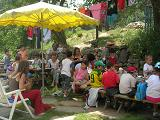
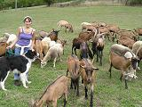
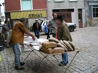
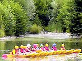

Gîte de Groupe English version
Ferme Découverte

Gouter à la Ferme
La Ferme Bio
Produits à la Vente
Liens
Gîte de Groupe English version |
 Ferme Découverte |
Gouter à la Ferme |
|  La Ferme Bio |
 Produits à la Vente |
 Liens |